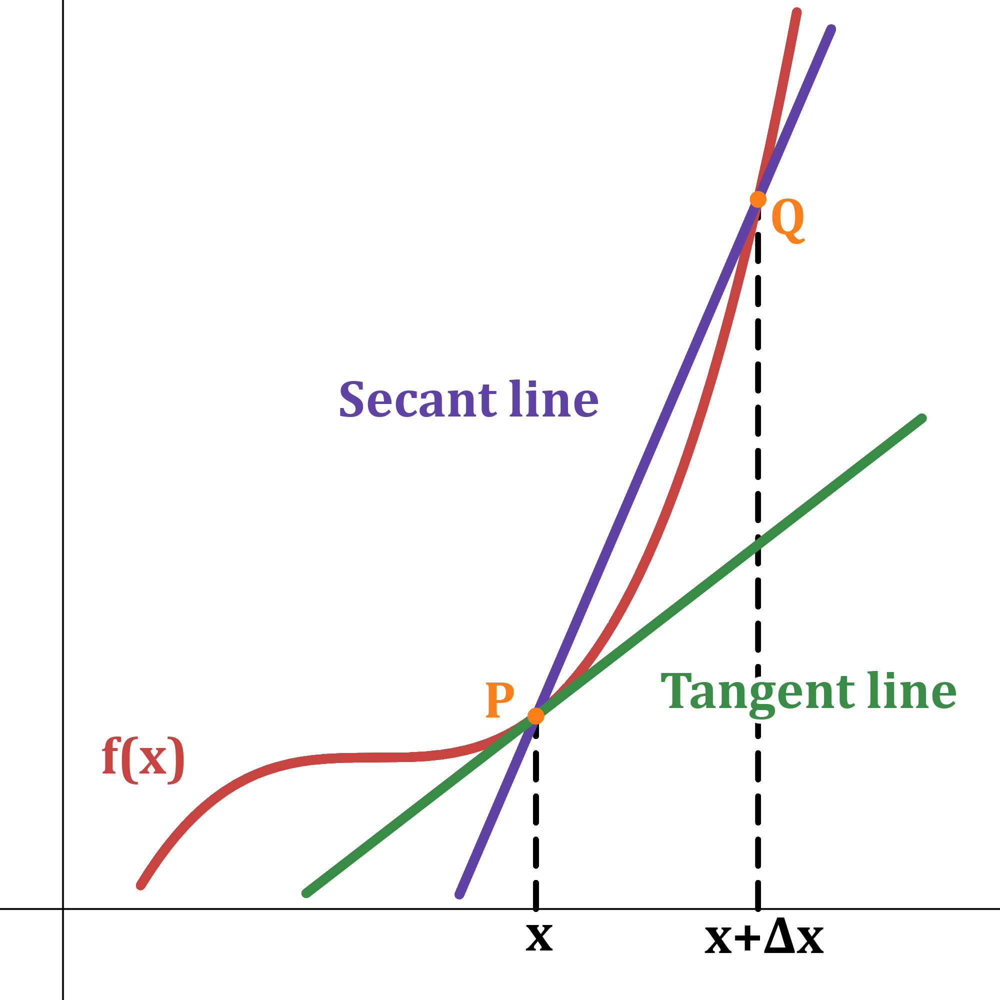
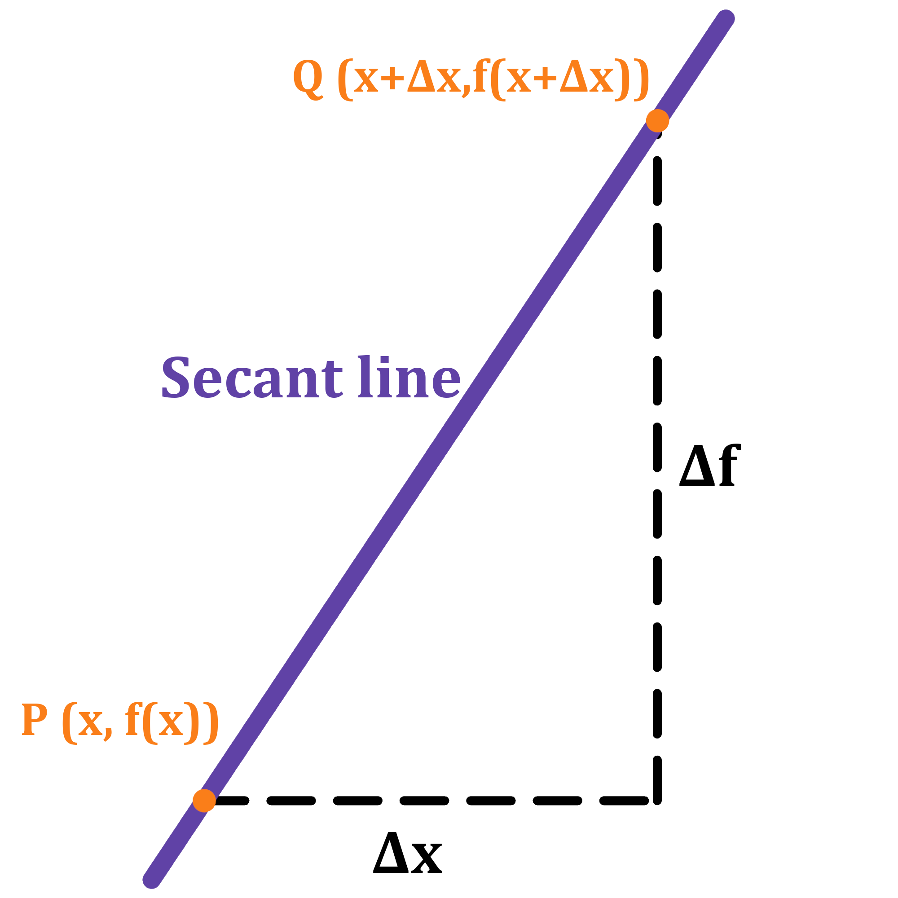

Finding the derivative of a function is the process of determining how fast or how slow a function changes with respect to its argument. More specifically, it is the process of finding an expression, whether numeric or algebraic, for the rate of change of the function with respect to its independent variable. Throughout this lesson, we will go over the physical and the geometric interpretation of the derivative.
Derivatives, Rate of Change, Slope, and Velocity
Section: Geometric Interpretation of the Derivative
Below, we see a function being graphed along with a secant and tangent line:

As seen in the figure, a secant line is a line which crosses the curve at two unique points; in the figure above,
these points are represented by \(P\) and \(Q\). It is a common misconception that a tangent line is one which crosses
the curve at exactly one point, however that is not correct. A tangent line is the limit of the secant line as the distance
between the two points of intersection (between the secant line and the original curve) goes to zero.
Note that in the figure above the points \(P\) and \(Q\) represent the output values of \(f(x)\) and \(f(x+\Delta x)\), respectively.
Thus, \(P = (x,f(x))\) and \(Q= (x+\Delta x, f(x+\Delta x))\). Additionally, the input values, \(x\) and \(x+\Delta x\), are separated
by a distance of \(\Delta x\), since \((x+\Delta x)-(x)=\Delta x\). Similarly, the distance in the \(y\)-direction can be labeled \(\Delta f\).
The tangent line therefore represents the limit of the secant line as the point \(Q\) approaches the point \(P\) (\(P\) is fixed):

[Before going on further, we feel it is important to discuss the meaning of the Greek letter delta, \(\Delta\) in upper case and \(\delta\)
in lower case. In practice, it most often represents the "change" in something; a "change in \(x\)" is represented by \(\Delta x\), a
"change in \(y\)" is represented by \(\Delta y\), and so on. It is also commonly described as an infinitely small piece of something.
For example, an infinitely small piece of \(r\) is \(\Delta r\). Combining both of these perceptions gives us the definition of an infinitely
small change in something. Thus, \(\Delta x\) represents an infinitely small change in \(x\) and \(\Delta f\) an infinitely small change in \(f\).]
As the point \(Q\) approaches \(P\), \(\Delta x\) approaches \(0\). The slope of the secant line, or the "rise over run", is the difference quotient of
\(\frac{\Delta f}{\Delta x}\). Thus, the limit of the slope of the secant line as \(\Delta x\) approaches \(0\) is
\[
\lim_{\Delta x\to 0}\frac{\Delta f}{\Delta x} = \lim_{\Delta x\to 0}\frac{f(x+\Delta x)-f(x)}{(x+\Delta x)-(x)} = \lim_{\Delta x\to 0}\frac{f(x+\Delta x)-f(x)}{\Delta x}.
\]
Because \(\Delta x\) is approaching zero, this limit equation approximates the instantaneous rate of change of the tangent line at any \(x\). The slope
of the tangent line to a function is otherwise known as the derivative: